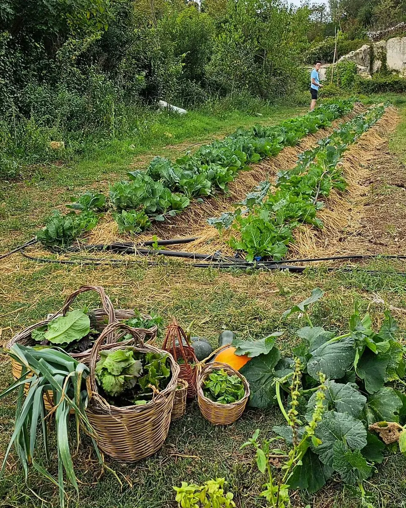
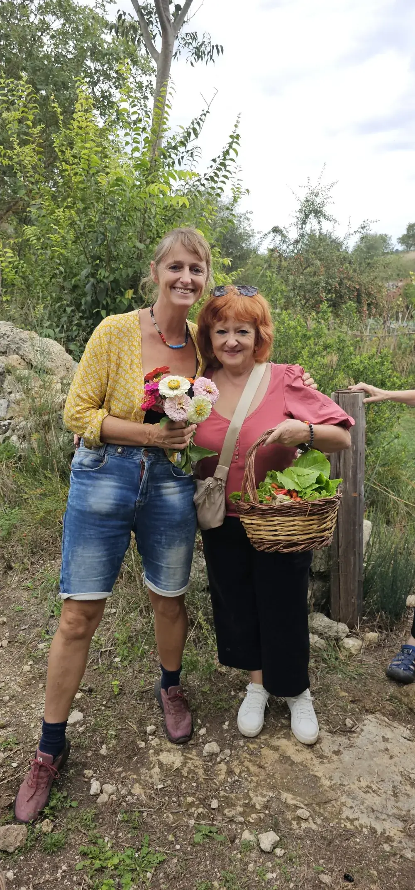
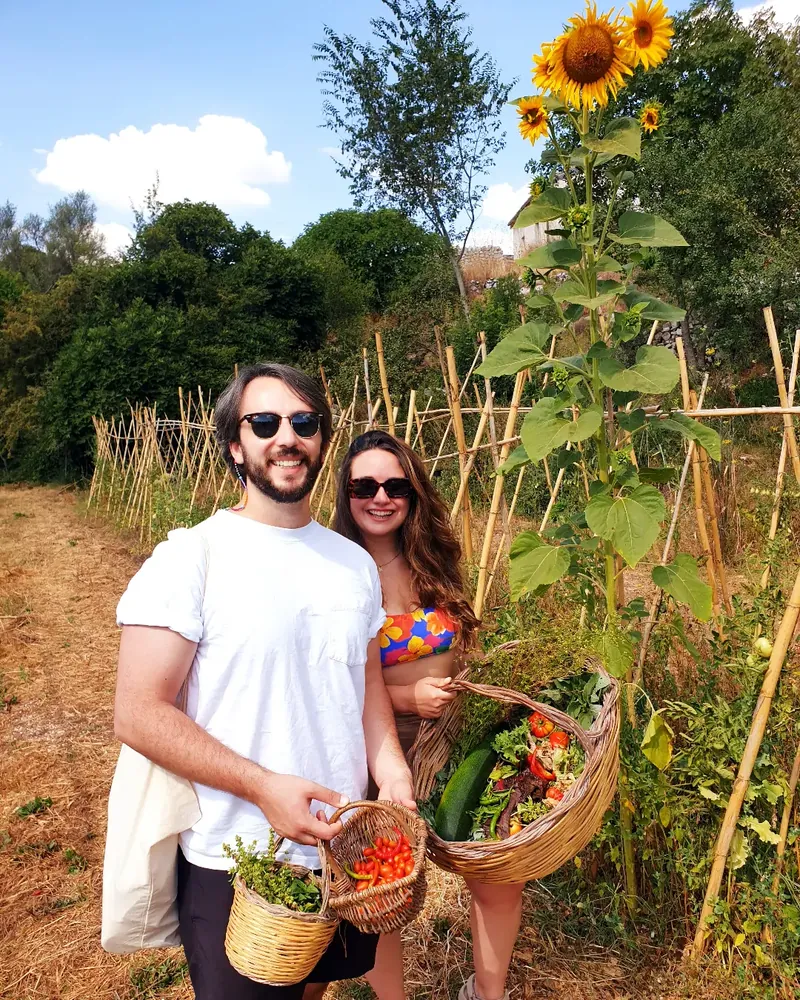
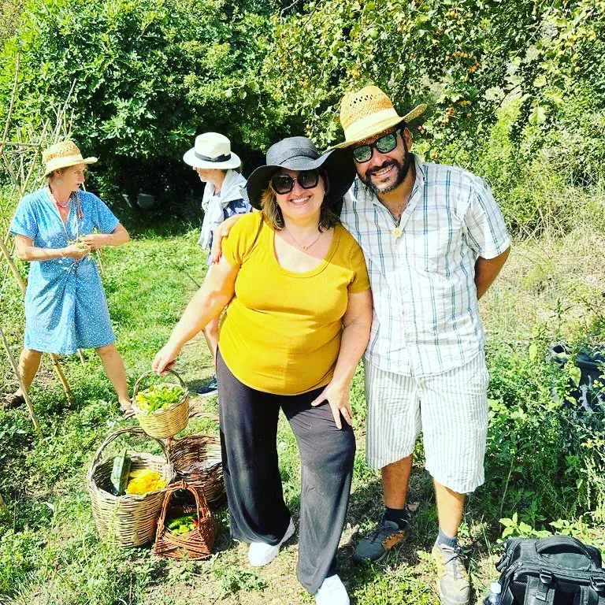
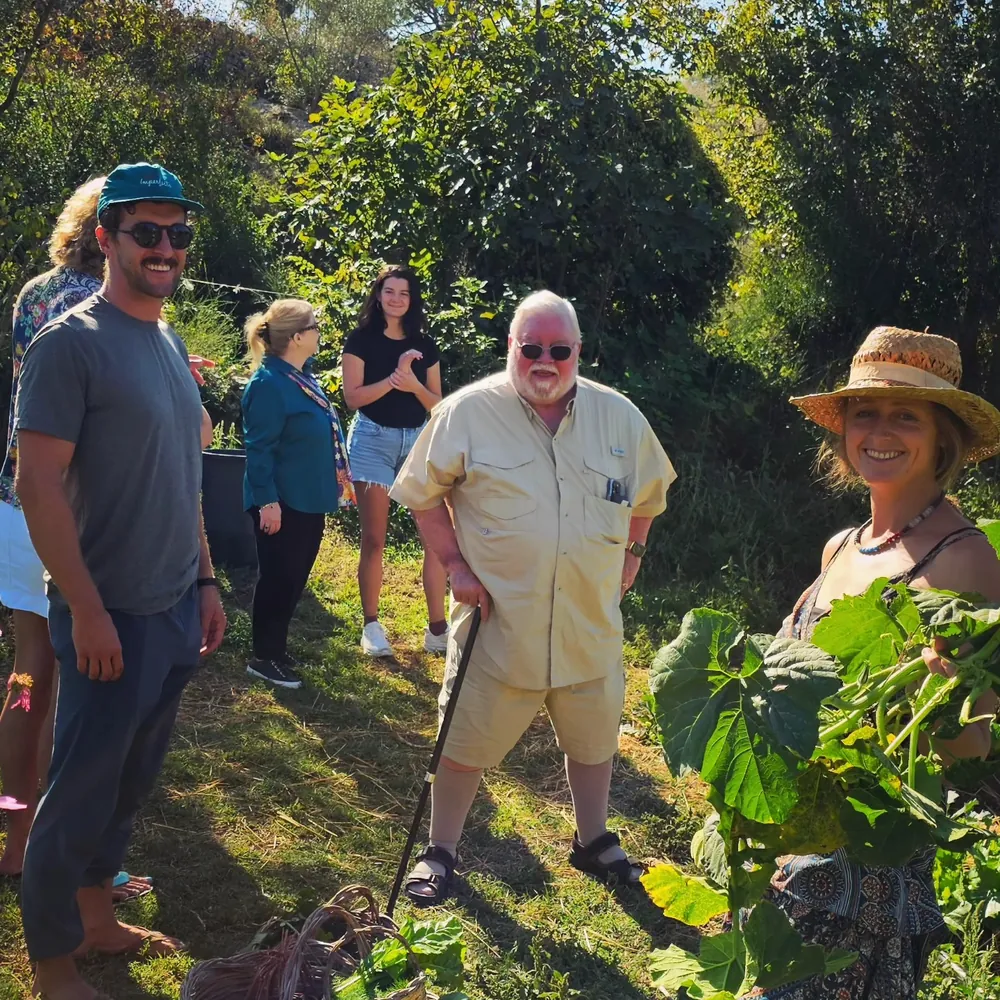
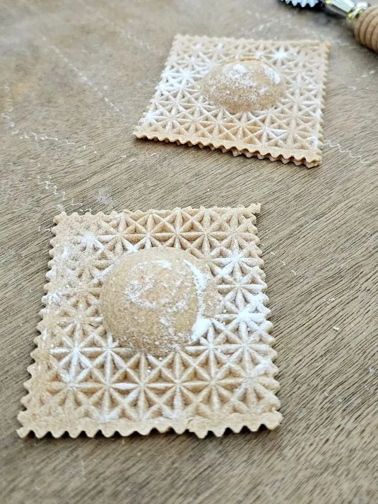

Where every lunch begins.
 Watch: in the gardens
Watch: in the gardens
We pick lunch together.
Before anything is cooked, we walk the garden rows together with baskets. Tomatoes climb their bamboo canes, cabbages sit in beds of straw, and flowers grow between the vegetables. What is ripe that morning becomes lunch.


Take the garden home with you.
The garden is yours to learn. Walk the rows with us and we will share every secret and every trick we know, so you can grow a garden like this one and feed your family from your own land, wherever you live.


A seed bank of rare Sicilian varieties.
You will pick organic vegetables with your own hands, including rare varieties from Sicily. Our farm is a seed bank that keeps these old seeds alive.

Watch the garden filmFlowers between the rows.
Sunflowers and zinnias grow beside the vegetables. Many guests leave the garden with a basket in one hand and flowers in the other.



Our guests in the garden.





Follow our days on the farm





There is a seat for you at our table.
Sunday lunch, served every day of the week. Choose your date and we will send everything you need.